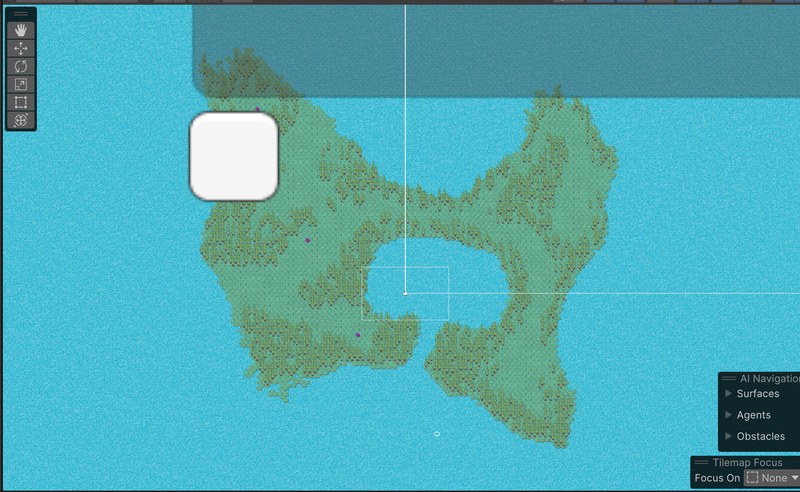
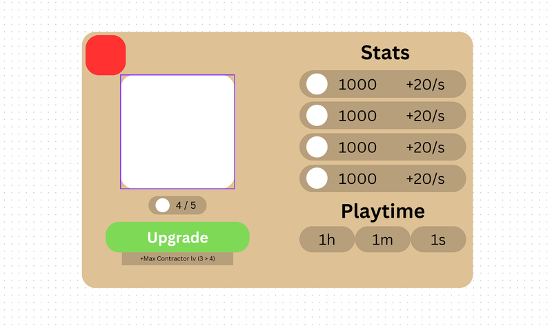
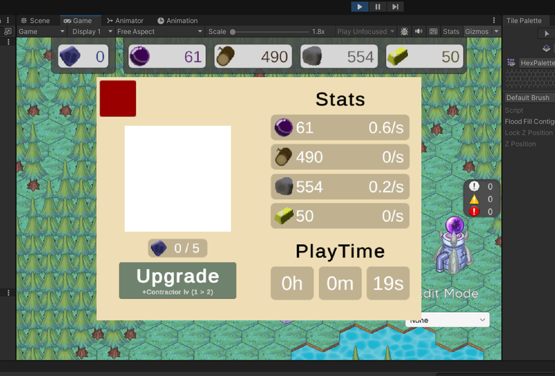

W25 Blog Post #2
Like most meetings, the bulk of this meeting was used for general work time/task analysis. Both the R&D teams had their presentations for their respective projects. I was particularly impressed with the progress of the team creating a Stardew-Valley inspired farming game and how quickly their visuals are coming along. I spent a portion of the meeting discussing the changes I had made regarding the interfaces for the buildings with another programmer, and how she might use it in implementing making the buildings upgradeable in game.
My tasks for the coming week would be to create a new design for the map to fit a total of 5 planned dungeons and to implement a squash and stretch feature for building/environment interactions.
I decided to begin by finishing the squash and stretch. Initially in planning out this feature, I envisioned I might have to move away from having the buildings be part of the tilemap, making the sprites rendered on the building gameobjects which already exist in the scene. However, after serching the Unity documentation, I found you can modify the individual transformation matrices of the tiles with Tilemap.SetTransformMatrix.
First, I created a script which stored a position and scale value and assigns the values to the respective tile with TileMap.SetTransformMatrix. This way, the values can be controled through a Animator. While the animation itself can't be viewed within the editor with this setup, it is still much more convenient than attempting to create an animation through scripts.
Having every single tree or building have its own animator and script constantly setting values to the tilemap would be incredibly inefficient, so instead I created a manager script. This script keeps a dictionary of associated coordinates and squish animators. When a new interaction is performed which should cause a squish effect it will create a new one if necessary. The animators remove themselves after a long enough period of being inactive.
Video of squish effect in use.
The current map of the world is very small and was only made for the purpose of quick prototyping. In total, we plan on having 5 dungeons, which would require a much larger world to work. To do this, I first looked online for various designs of landmasses, such as D&D maps in particualar. I used the tile painter to sketch out a rough design of the landmass, filled it in, tweaked the shape a bit, then added trees and necessary starter buildings.
Redesigned Map
Moving the new map from the scene I'd made for my branch to the main scene did cause some issues. The tile painter does provide a copy-paste option, but this information is not preserved when changing scenes. I ended up having to just copy the grid gameobject all together and replace the ones in the main scene, which required reassigning a few inspector fields. Because of this, I checked to ensure everything was still operational before merging.
Due to general weather and road conditions this meeting was held online and finished up shorter than usual. We did the usual routine of checking everyone's progress and assigning new tasks. My task would be to work on a basic functionality for the UI of the Main Tower. The contents that the UI should have was already described in a design document by Connor Spears, so I only had to work on implementation.
I began by creating a design for the UI layout in Canva. I only needed to create a rough layout which had the functionality, but I figured I should make it catered to the intended final design. The design doc describes the UI will be layed out like an open book with stats, resource generation, playtime, and main tower upgrade info. I decided to split the stats and upgrade info between the two halves that would be the two pages of the book.
The implementation was fairly straight forward. Integrating it with the UI manager, adding a close button, and opening on a building click could all be emulated from the previously created building UI's. This UI did have its fair share of unique features, though. The playtime, for instance, uses the Time.time, but this will have to be changed to use the save system later.
I also had to do some extra work in order to create the total resource generation stats. Each building manages its own coroutine for generating resources, so no value for a total generation existed. However, the changes I'd made using the building interfaces several weeks ago made it very easy to retrieve a list of all resource producing buildings in the map and add their values. This function was implmented in the Resource Manager and called by the Main Tower UI
implemented Main Tower UI
The blank white box is intended for a roughly described visual using the fossils which has yet to be designed.